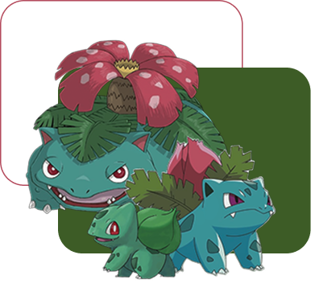
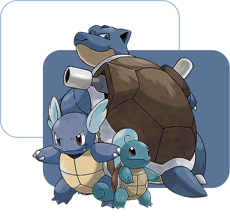
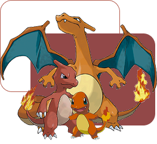

Iniciais Kanto
Kanto tem 8 cidades principais com Ginásios Pokémon.
Cada ginásio tem um líder que entrega uma insígnia.
Após vencer os 8 ginásios, o treinador pode desafiar a Elite dos 4 e o Campeão da Liga Pokémon.
nº 0001
Bulbasaur
Bulbasaur é o primeiro Pokémon da Pokédex e um dos três iniciais da região de Kanto. Ele tem um broto de planta nas costas, que cresce à medida que ele se desenvolve. Esse broto usa fotossíntese para absorver energia do sol.
nº 0004
Squirtle
Squirtle é um dos três Pokémon iniciais da região de Kanto. Ele se parece com uma pequena tartaruga azul e tem uma cauda enrolada. Seu casco é forte e serve de proteção, além de ajudá-lo a nadar com agilidade.
Quando ameaçado, Squirtle pode se esconder no casco e disparar jatos de água pela boca para se defender.
nº 0007
Charmander
Charmander é um dos três Pokémon iniciais da região de Kanto. Ele se parece com um pequeno lagarto laranja com uma chama acesa na ponta do rabo — essa chama reflete suas emoções e saúde. Se ela apagar, é sinal de que Charmander está muito fraco ou até em risco de vida.
É conhecido por sua personalidade determinada, e sua chama fica maior quando está bravo.